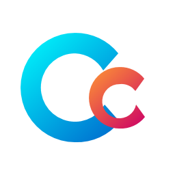

Sin Telemetría ni Espías
Tus datos son tuyos. Mis programas no recolectan información personal, no envían telemetría oculta ni espían lo que haces en tu PC.
100% Libre de Publicidad
No instalo programas de terceros indeseados ni lleno la interfaz de anuncios molestos que consumen RAM y ralentizan tu máquina.
Código Transparente
Todo el código fuente es público. Puedes auditarlo tú mismo en GitHub, ver cómo funciona y compilarlo desde el origen.
¿Por qué hago esto gratis?
Hago los programas que a mí mismo me gustaría tener instalados en mi computadora. No me gusta la idea de pagar licencias abusivas por tareas del sistema básicas, ni mucho menos meterle bloatware a un optimizador de rendimiento.
Creo firmemente en el poder del software libre y en la colaboración comunitaria. Al hacer el código transparente, todos podemos aprender cómo funciona el sistema operativo Windows por dentro y construir herramientas más seguras y rápidas juntas.
Hola, soy Joseph
Estudiante de Ingeniería de Sistemas & Desarrollador
Mi Historia y Pasión
Soy un estudiante apasionado por el hardware, el funcionamiento interno de los sistemas operativos y la optimización de computadoras. Desde que empecé en el mundo de la informática, siempre me ha intrigado cómo exprimir al máximo el rendimiento del PC sin comprometer la estabilidad del sistema.
Esto me llevó a investigar a fondo los servicios de Windows, las claves del registro de baja latencia y el comportamiento de la memoria RAM. In lugar de guardar este conocimiento para mí, decidí crear programas nativos rápidos y ligeros para compartir con todos.
Mi objetivo es continuar formándome en ingeniería y construir un portafolio de utilidades robustas de código abierto que faciliten la vida a la comunidad de habla hispana y al mundo.
Datos Rápidos
- Especialidad: Optimización de Windows, Registro y Servicios
- Tecnologías: C#, WPF, PowerShell, C++ (DX / Win32)
- Filosofía: GNU GPLv3, Software honesto y libre
- Educación: Estudiante de Ingeniería de Sistemas
¿Qué encontrarás en mi canal?
Subo videos con el propósito de educar a la comunidad y desmitificar la optimización en Windows. En mi canal no verás trucos mágicos falsos que arruinen tu sistema, sino explicaciones lógicas paso a paso sobre:
- Cómo funcionan la RAM, el caché del sistema y los Working Sets.
- Tweaks reales de registro para mejorar el Input Lag y estabilidad en juegos.
- Detección de bloatware y cómo desinstalar programas basura de raíz.
- Demostraciones y actualizaciones sobre el desarrollo de mis proyectos.
Catálogo de Programas y Software
Todos mis proyectos se distribuyen de forma gratuita. Los repositorios de código son públicos en GitHub y puedes descargar los instaladores oficiales directamente desde la sección de Releases de cada repositorio.

Cchay Optimicer
Una herramienta ligera y potente para limpiar RAM (Working Set, Standby List, System File Cache), vaciar archivos temporales de disco de forma segura, eliminar bloatware integrado y aplicar tweaks de baja latencia. Todo de forma transparente y bajo tu control.
Cchay Dotfiles
Mis archivos de configuración personales para Linux. Incluyen mi entorno completo con el gestor de ventanas Hyprland (Wayland), atajos, barra de estado y terminal optimizada.
bash -c "$(curl -fsSL https://raw.githubusercontent.com/dzenwertz/Joseph_ICV-Dotfiles/main/bootstrap.sh)"
Control para TV LG
Una aplicación de control remoto para televisores LG sin anuncios molestos ni telemetría. Desarrollada para resolver los problemas de mala conexión y publicidad abusiva de las alternativas comerciales en la Play Store.
Más Proyectos en Camino
Aquí iré listando las próximas herramientas que libere. Cada aplicación tendrá su propio repositorio de GitHub con sus respectivos instaladores oficiales en la sección de Releases.